Fields without visibility
Without a soil baseline, continuous monitoring or reliable farm history, decisions about irrigation, nutrients and crop health depend on incomplete information.
AGRICULTURAL INTELLIGENCE. NATIONAL AMBITION.
Better decisions for every farmer.
A connected agricultural future for Africa.
Terra AI brings field sensors, its own rural network and agronomic expertise together—turning real soil data into practical advice, and individual farms into a connected national ecosystem.

From soil intelligence to a connected agricultural future.
Watch the introductionTHE CONNECTED TERRA NETWORK

Illustrative messages and doses. In the Terra protocol, NPK recommendations use Terra Lab analysis and agronomist validation. The gateway connects to the internet, and SMS delivery uses the mobile network.
THE CHALLENGE
Without a soil baseline, continuous monitoring or reliable farm history, decisions about irrigation, nutrients and crop health depend on incomplete information.
A measurement is only useful when someone can interpret it. Farmers need practical guidance in a language they understand, suited to their soil and crop.
Weak rural connectivity and fragmented records make it difficult for agronomists, governments, suppliers and buyers to reach the right farmers at the right time.
THE TERRA INFRASTRUCTURE
We are building the physical and digital foundation for agricultural intelligence: energy, sensing, connectivity, knowledge and coordination.
 01 / FIELD LAYER
01 / FIELD LAYERA solar-powered sensing node that follows soil, leaf and air conditions. Local processing connects the physical field to the digital platform.
Explore the hardware 02 / CONNECTIVITY LAYER
02 / CONNECTIVITY LAYERA private LoRaWAN field network links many Boxes to shared gateways. Each field node can communicate without its own SIM card or internet connection.
Follow the data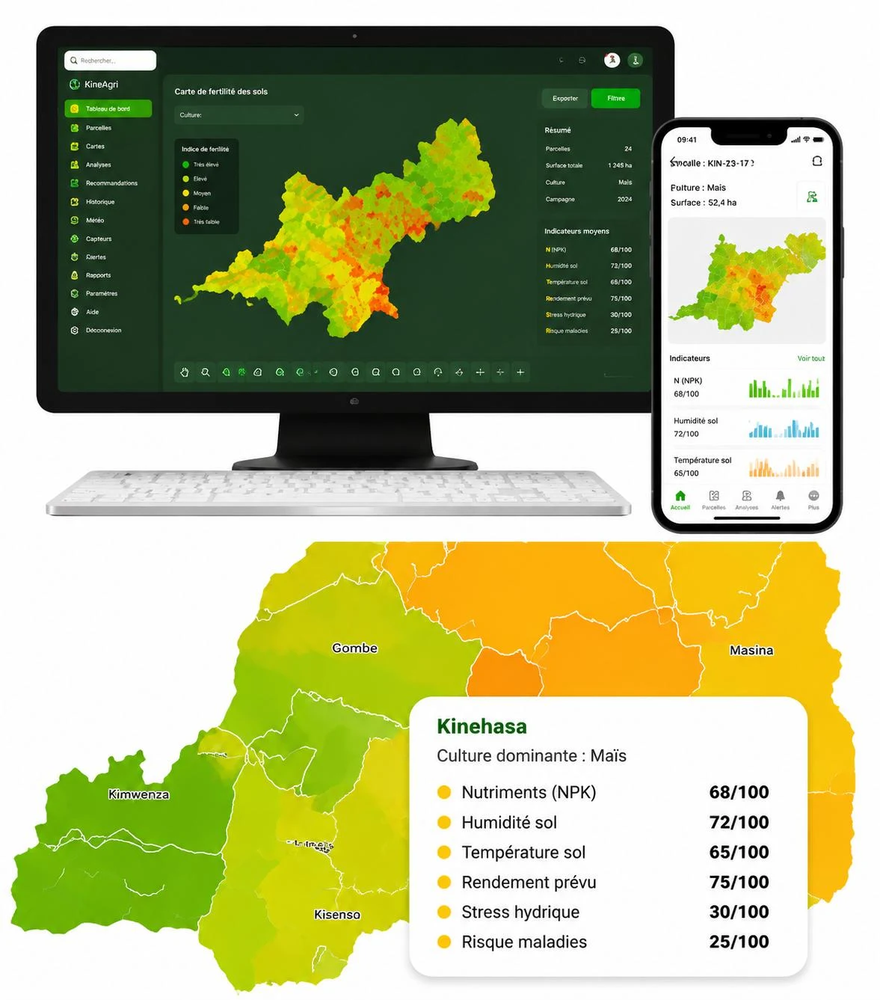
03 / INTELLIGENCE LAYERPlatform conceptField records, laboratory results and weather context inform agronomic decisions. Shared farm profiles are the foundation for connecting the wider sector.
Meet the ecosystemFROM A MEASUREMENT TO A MEANINGFUL ACTION
A complete chain of evidence: the sensor observes, Terra connects and interprets, the agronomist validates, and the farmer receives clear guidance.
01 / SENSE THE FIELD
Soil probes follow electrical conductivity (EC), moisture, temperature and pH. Leaf sensors track wetness and temperature, while air sensing adds environmental context. Readings are linked to a known field and management zone.
Physical soil, crop and air conditions
Time-stamped measurements for a specific zone
Built for rural realities. Box → gateway uses LoRaWAN. Gateway → cloud needs an internet backhaul, such as cellular service or an external satellite connection. SMS delivery needs basic mobile network coverage.
IN THE FIELD
Our agronomists support empty plots and existing farms. The Terra protocol connects EC mapping with our Box, analysis by Terra Laboratoire Agronomique, crop planning and continuous follow-up.
A Terra agronomist registers the field and maps electrical conductivity with the Terra Box’s soil sensor to guide zoning and sampling.
Terra Laboratoire Agronomique analyzes samples from each zone to establish the N, P, K and soil baseline used in the agronomic plan.
Our agronomist defines the crop calendar, inputs and good practices with the farmer. Terra installs and checks Boxes at representative points.
Combine continuous monitoring, agronomist visits and validated SMS advice. Record interventions and harvest results to improve the next season.
Explore the complete 10-step protocol, from soil mapping to the next season.
THE NATIONAL VISION
A field becomes visible when its location, soil, crop and history are connected to a farmer. Terra’s platform vision uses that shared foundation to coordinate the entire value chain.
A registered farm profile brings location, crops, soil information, field history and agronomic needs into one place. Farmers contribute observations and outcomes, and receive guidance and access to the people who can help them act.
Get crop-specific guidance from agronomists through accessible SMS.
Connect identified needs with suitable inputs, support and buyers.
Build a season-by-season record that makes the farm easier to support.
Production → Harvest → Processing → Distribution → Consumer
National capabilities are a development roadmap. Access to identifiable farm data should be permission-based, with each actor receiving information appropriate to its role.
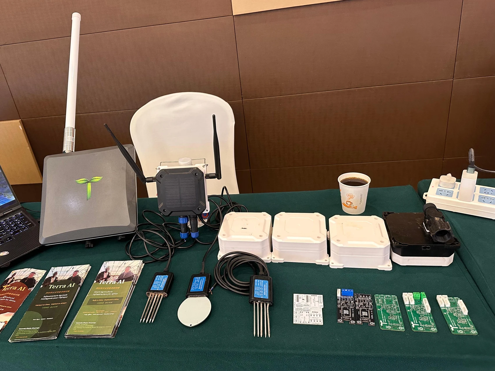
Terra AI hardware · From prototype to field validationSCIENCE BEFORE SCALE
Terra’s approach combines continuous observation with laboratory evidence and local expertise. Technology extends an agronomist’s reach while preserving professional judgement.
Follow EC, moisture, temperature and pH continuously. These signals describe changing field conditions.
N, P and K reference values come from Terra Laboratoire Agronomique. Our agronomists interpret the results; sensor changes can trigger a review and a new sample.
Future predictive models will be developed after collecting sufficient paired sensor, laboratory and field-outcome data, then validated before operational use.
THE PHYSICAL FOUNDATION
Modular hardware, low-power communication and solar energy form the base of the Terra architecture.

RS485 probes track EC, moisture, temperature and pH at representative locations.
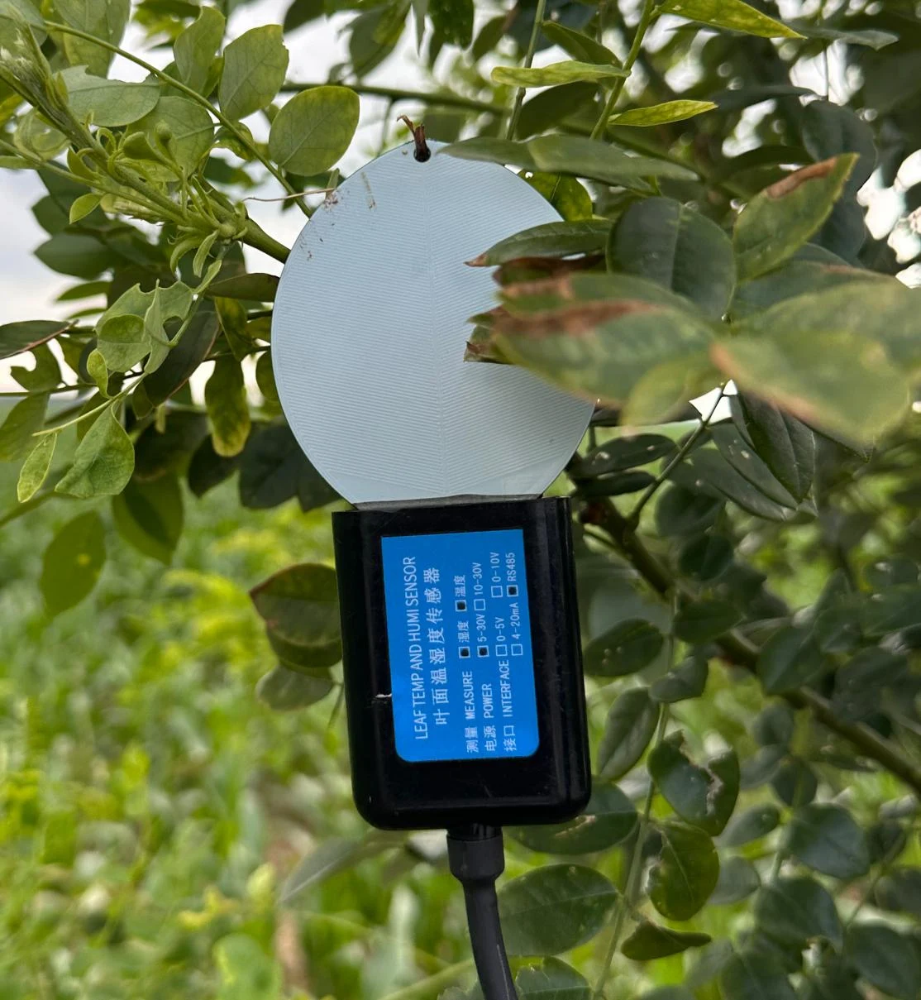
Leaf wetness and temperature complement air temperature, humidity and pressure measurements.
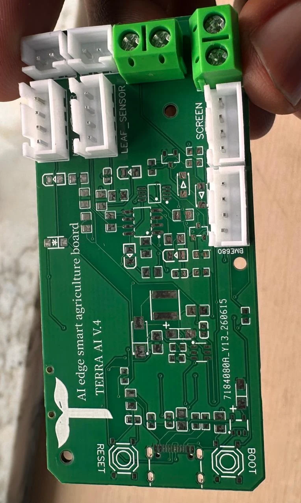
Custom V4 PCB, RAK3112 processing, sensor interfaces and solar-battery power. Actuation supports approved irrigation workflows.
INSIDE THE TERRA BOX
The module at the heart of the Terra Box combines local computing with three complementary wireless links.
EDGE AI · ESP32-S3
The ESP32-S3 provides local processing for sensor acquisition, data preparation, configured rules and lightweight AI models. Its vector instructions support neural-network and signal-processing workloads. Terra combines this embedded layer with cloud analysis, farm history and the agronomist’s judgement.
THE SHARED SOLAR GATEWAY
Solar-powered outdoor gateway for LoRaWAN
Terra’s network architecture uses the WisGate Edge Pro V2 family (RAK7289V2 / RAK7289CV2). Coupled with Battery Plus and the Solar Panel Kit, it provides a shared reception point for field Boxes where reliable grid power is unavailable.
In Terra: many Boxes → one shared gateway → Terra Cloud. Solar power makes the installation independent of mains electricity; the gateway still needs an internet uplink to reach the cloud.
See the RAKwireless solar kitNETWORK DESIGN
RAK7289 V2 family gateway configuration; the LTE option depends on the model.
Project coverage target in favorable conditions; confirmed through local radio surveys.
Design objective per gateway, subject to traffic, radio settings and field validation.
Gateway configuration: RAKwireless documentation ↗. Range and device-count figures are Terra planning assumptions, not guaranteed deployment performance.
OPEN-SOURCE TOOLS FOR SMART AGRICULTURE
TerraSoil is Terra’s open-source Arduino library for smart agriculture. It standardizes how compatible RS485 soil-sensor data is read and organized, so developers can build monitoring and decision-support tools.
Read moisture, temperature, EC, pH and the other registers exposed by supported 10-in-1 sensors, including NPK. The library handles Modbus RTU communication, CRC checks and unit conversion.
Install TerraSoil through the Arduino Library Manager, as described in the project documentation, or use the GitHub source. Examples help connect sensor readings to an agricultural application.
PRACTICAL APPLICATIONS
Terra is designed to make information actionable at the farm level and useful for planning at the regional level.
Track soil moisture and help agronomists prioritize irrigation checks. Where installed, local control follows approved schedules and operating limits.
Combine laboratory baselines with changing soil conditions to plan inputs and identify when a new analysis is needed.
Use leaf wetness, temperature and weather context to flag conditions that warrant a field inspection.
Build a clearer picture of registered crops, production zones, farmer needs and harvest timing to guide services and collection.
EXPERIENCES & FIELD WORK
Explore Terra AI’s field observations, sensor installations and prototype development through photographs from the project.
Connecting field observations with sensor information.
Following soil conditions in the root zone.
Adding leaf-level observations to the field picture.
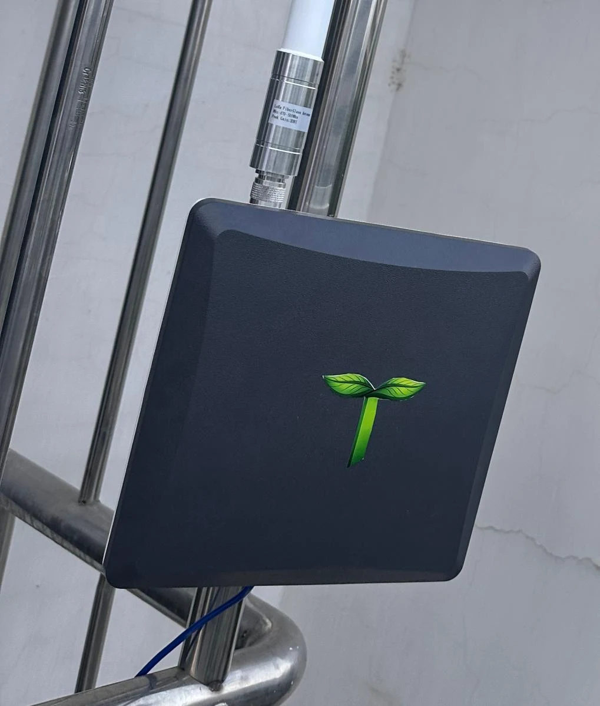
Bringing sensing and communication into one field node.
Exploring the components behind the Terra infrastructure.
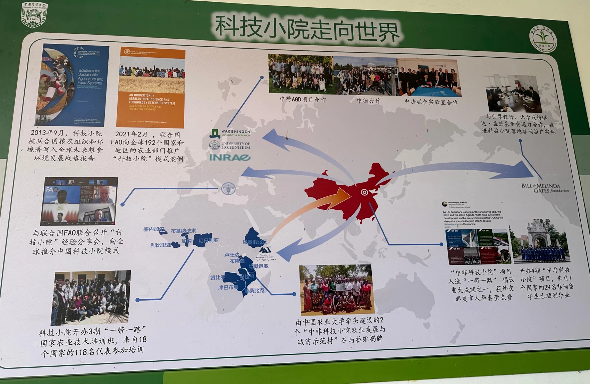
Agronomic learning through the China–Africa project pathway.

The Box and agronomic support brought together in the field.

Project demonstration material. The current nutrient protocol uses Terra Lab as its NPK reference.
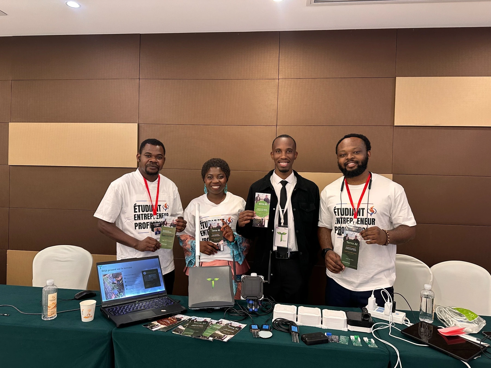
Presenting the Terra Box and the project’s vision.
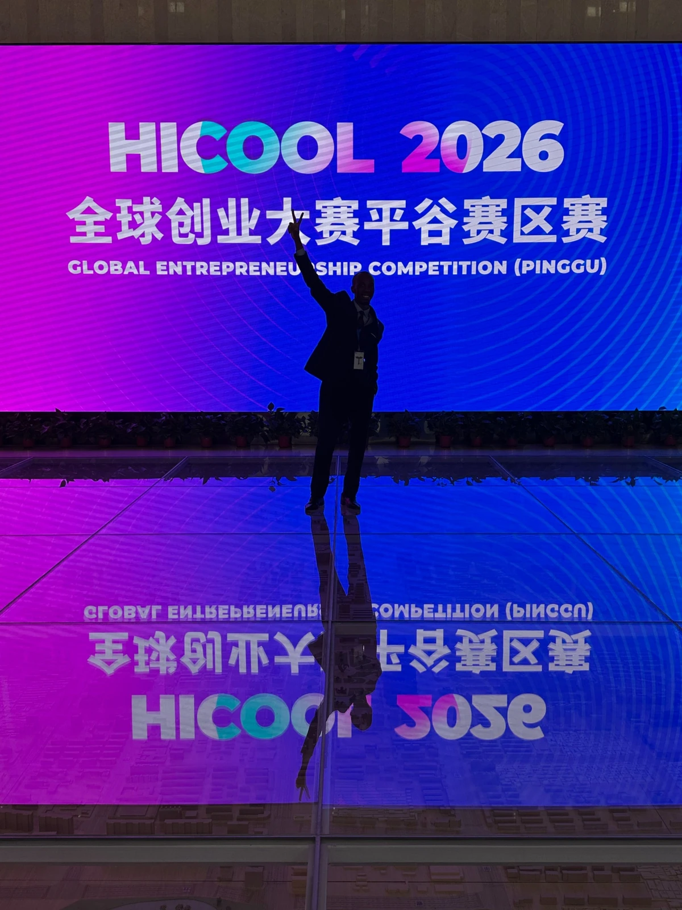
Modern Agriculture · Project 267184.
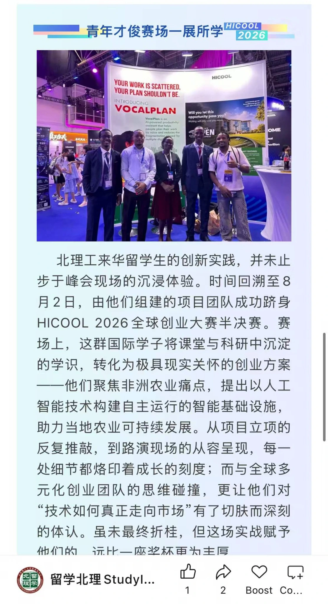
Open the image to read the original publication.
Use the arrows or swipe to explore.
01 / 11TERRA AI IN ACTION
Explore the vision, field deployments, installation, farmer experience and the engineering behind Terra AI through the team’s videos.
YOUTUBETHE PROJECT
Discover the project’s vision: connect field intelligence, agronomic expertise and the agricultural ecosystem.
Watch the video ↗YOUTUBEFIELD DEPLOYMENT
A Terra deployment accompanied by an agronomist, bringing technology into the farmer’s working environment.
Watch the video ↗ SHORT
SHORTINSTALLATION · SHORT
A short video focused on the installation of the field device.
Watch the video ↗TERRA AI · SHORT
A complementary short video shared by the Terra team.
Watch the video ↗HICOOL 2026
Terra’s smart agriculture project for Africa at the HICOOL 2026 competition.
Watch the video ↗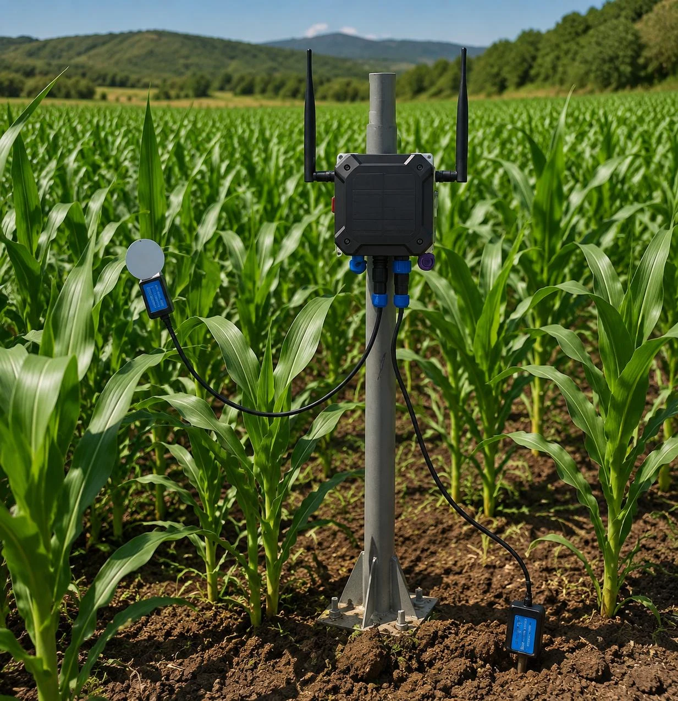
SHORTFARMER PERSPECTIVE · SHORT
A farmer explains how he used the technology in his agricultural work.
Watch the video ↗RESEARCH · NPK CALIBRATION
A research presentation on physics-informed neural networks and conventional neural networks for NPK sensor calibration.
Watch the video ↗YOUTUBEOPEN SOURCE · ARDUINO
An introduction to the Arduino library for reading compatible RS485 soil sensors.
Watch the video ↗The PINN / ANN video presents calibration research. Terra’s operational nutrient protocol continues to use Terra Lab results and agronomist validation.
Project images illustrate the video cards; the installation Short uses its supplied YouTube thumbnail. Videos retain their original audio.NEWS & RECOGNITION
A growing journey of field demonstrations, international competition and university recognition, connecting China-based engineering to Africa’s agricultural future.
PROJECT DEMONSTRATION
The Terra stand brings the project to life: field Boxes, soil probes, connectivity components and conversations about the future of agricultural intelligence.
Explore the stand photo ↗HICOOL 2026 · SEMI-FINALIST
Terra AI reached the semi-final of the HICOOL 2026 Global Entrepreneurship Competition in the Modern Agriculture category. Project 267184 took its vision for Africa’s agricultural infrastructure to an international entrepreneurship platform.
Discover HICOOL ↗UNIVERSITY RECOGNITION
BIT’s international student publication highlights the team’s entrepreneurial journey, its HICOOL 2026 semi-final and its work on autonomous AI infrastructure for African agriculture.
This recognition gives visibility to the bridge Terra is building between engineering research, entrepreneurship and the needs of farmers.
ShanghaiRanking · Best Chinese Universities Ranking 2026
View the university ranking ↗Publication screenshot supplied by Terra AI. The university ranking refers to BIT as an institution.
Terra’s project brief reports testing with African agronomists trained through China Agricultural University’s Science and Technology Backyard network.
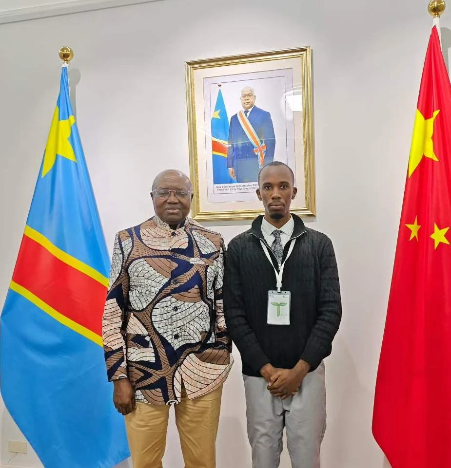
The project has been presented to the DRC Embassy in Beijing. These discussions support the pathway toward a locally grounded pilot.
THE NEXT MILESTONE
The next step is a documented pilot with farmers, our agronomists and Terra Lab, connecting the complete service from soil diagnosis to harvest review.
Field reliability, useful recommendations, adoption, service costs and measurable changes in yield, water and input use.
Project milestones and engagements are reported in the Terra AI brief. Institutional discussions and expressions of interest are not funding commitments or signed deployment contracts.
FOR INVESTORS & STRATEGIC PARTNERS
The DRC is the launchpad. Terra’s commercial model combines field infrastructure with recurring services, with access models suited to different agricultural actors.
Total addressable market
Sub-Saharan smallholder focus
Serviceable obtainable market
Company market estimates from the investor brief; they are planning assumptions and require further market validation.
Box installation with recurring monitoring, advice and platform services.
Upfront access for a growing season, reducing the initial equipment purchase barrier.
A proposed 2–5% yield-sharing model, to be structured and validated in local pilots.
EC mapping with the Terra Box, Terra Lab analysis, farm planning and support from our field agronomists.
THE ROAD TO NATIONAL SCALE
Scale follows field evidence. The initial roadmap connects Beijing-based development to installation, training and support in the DRC.
Produce the initial batch, complete hardware validation, prepare intellectual-property filings and organize shipment to the DRC.
Test across different crops and soil types around rural Kinshasa. Follow performance, farmer use and agronomic outcomes over 3–6 months.
Expand after pilot validation, measure water, input and yield outcomes, develop institutional agreements and prepare further fundraising.
12–18 months of Beijing R&D and DRC pilot work, as scoped in the project brief.
The proposed structure places R&D, supplier coordination and platform development in Beijing, with installation, training, local relationships and service delivery in the DRC.
Budget, timing and deployment targets remain subject to funding, procurement and field results.THE PEOPLE BEHIND TERRA
A multidisciplinary team bringing technical development, business planning and agricultural expertise into the same project.
FOUNDER & CEO
Mechatronics · Beijing Institute of Technology
Hardware, edge intelligence and the China–DRC project pathway.CHIEF BUSINESS OFFICER
Economics & International Trade · BIT
Business development and commercial strategy.EXPERT AGRONOMIST
Agronomist and farmer
Beijing University of Agriculture
Zhang Xiangfu · 张乡夫
Beijing Institute of Technology · Hardware validation
BIT · China Agricultural University
RAKwireless · JLCPCB
LET’S BUILD WHAT COMES NEXT
Partner with Terra AI to move from field data to farmer action—and from a pilot to a connected agricultural future.